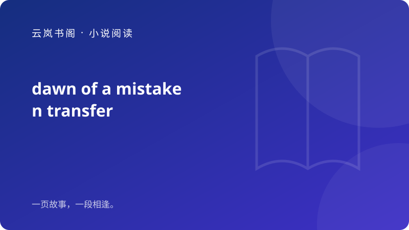

市场的深夜，只有几盏路灯微弱地闪烁，映照着李明忙碌的身影。作为一名摊主，他在角落里整理着明天要销售的水果，尽管摊位不大，但这就是他维持生活的支柱。…
开始阅读 →城中的钟声敲响，传令官从云城边缘的风铃里拉出一串短促的音符，公示着一个限时任务的开端。观者站在街巷尽头，记录着每一次风声的变化：云城的招牌灯忽然熄灭，店前的孩子
开始阅读 →
凌晨的地面还有潮气，灯光打在湿滑的砖面上，折成细碎的光斑。张水，一个独自养家的摊主，正清点着昨夜的收款单，耳边是市场里逐渐空荡的脚步声与水珠落在铝盆里的叮咚声。
开始阅读 →多年以后，在校园边缘的老教学楼门口，主角与一位旧友不期而遇。两人站在潮气与尘土混合的气味里，旧墙上斑驳的毕业年号像被时间擦拭过的记忆。…
开始阅读 →暴雨像一只无形的手，先是轻轻拍打着车窗，然后猛烈地敲击着国道两侧的路牌。雨幕里，路灯的光环被打碎成若干条细碎的光刺，像是废弃渡口前那条晃动的木栈道。…
开始阅读 →末班车厢的灯带闪烁出黄绿相间的光，角落里有一个灰色的提箱被无人认领，箱盖微微翻起，像在诉说被遗忘的故事。失物招领员沿着车厢边沿缓缓清点，手指掠过箱内的物件：一张
开始阅读 →三扇玻璃门缓缓合拢，封闭竞标室内的空气带着消毒水的味道。数据员李岚在桌面上摊开本日的异常报表，数字的跳动像暗涌的波纹，一次次击打着她的指尖。她的笔记本里，A端的
开始阅读 →江南药铺在雨夜中显得格外寂静，细雨有节奏地敲打着屋檐。学徒林青独自一人，静静打量着一排排的药材，心底却感到无比孤寂。自从失去了嗅觉，他再也无法准确地识别药材的芳
开始阅读 →海面升起的晨雾被风暴边缘的灯塔切开，两座巨型舱楼像等待指令的巨兽。离岸的气候维护中心发出七天内必须完成的全球性灾害预警任务，主线气候维护员岚与副线情报员柯在同一
开始阅读 →林浩的手指在那本破旧的菜谱上游走，眉头紧锁，似乎被沉重的回忆压得喘不过气来。他坐在餐桌旁，心里翻腾着对父亲期望的念头，却难以释怀。那每一页都承载着过往的故事，却
开始阅读 →雨夜的灯光透过旧木门投在地板上，尘埃像星尘一样跳动。门被缓缓推开，一位陌生的中年人站在门口，手里夹着一叠厚厚的纸张。他说：“这是爷爷留下的，关于你们家的房产。请
开始阅读 →法庭外，段明安的手机铃声骤然响起，打断了她的沉思。她的手微微颤抖，听到电话那端传来一位未婚妈妈颤抖的声音，诉说着自己的无助与恐惧。段明安的心猛然一紧，仿佛回到了
开始阅读 →竞标室内，空气凝重得让人窒息。小李的桌子上，电脑屏幕闪烁着未保存的报表，旁边的咖啡杯已经凉透。…
开始阅读 →河谷村外的路灯像一圈微弱的月光，被雾气收拢，湿气把木头的气味拼出一张古老的契约。两个人在返乡路上并肩而行，脚步声被水气吞没，只剩下雨后泥土的黏滑触感。…
开始阅读 →深夜，走廊的灯光像被截断的线条般倔强地留在墙面上。两名资深护士各自从前台的抽屉里取出两份同意书，纸面在灯下发出微弱的哑光。她们对视一瞬，仿佛在确认这不是同一次流
开始阅读 →苏晨在律师事务所的办公室里慢慢睁开眼睛，周围的沉寂令他感到不安，冷光灯的亮光照射在空荡荡的四壁上。他的心跳加快，意识到自己身处这个封闭的空间，无法逃离。…
开始阅读 →凌晨，地铁站内的广播忽然跳起，杂音叠着冷风吹散人群的喧闹。…
开始阅读 →晨光未及，河谷的雾像是一层薄纸，覆在木头的纹理上。返乡木匠托着一桶水，木屋还在半截，未寄出的信夹在工具箱里，字迹已被雨水打皱。外屋的门槛上，第一串湿脚印沿着木板
开始阅读 →国道上，沉重的雨水倾泻而下，猛烈地拍打着车窗，发出刺耳的声音。代驾司机李明紧握方向盘，神情凝重，透过雨幕，他模糊地看见前方道路已被洪水淹没。…
开始阅读 →一卷未冲洗的合影在秦昭深手中，窗外的光线投射在她的脸上，神情显得复杂。她的眼睛在照片上划过，回忆起与表弟一起度过的童年时光。两人曾是无话不谈的好友，但如今因外界
开始阅读 →会议室的灯光冷冷地落在桌面，桌上摆着两份被否决的方案和一台正在计时的旧钟。临时负责人缓缓站起，声音平直却带着不容置疑的节拍：“我们今晚决定的不是谁留下，而是谁能
开始阅读 →新任调解员林澄拎着公文包走进小城的调解室，桌上是一份双方否认签署的和解书。纸面排版整齐，却在签名处露出细微的错位，字体间距仿佛在说话。桌角放着一张旧笔记本，里面
开始阅读 →我在山中疗养院醒来，四周的墙体像被水泥钉牢的回声。脑海里的一块空白闪过，记忆的边缘滑落，像手指触及潮湿的墙面，生生止住。墙内有节律的声音，仿佛有人在重复着同一句
开始阅读 →清晨的走廊静得像一块被雾打磨过的玻璃。无窗诊室的门并没有打开，也没有任何光线从外侧挤进来，只有灯带沿着墙面低低照出一个不完整的人影。旁观者坐在记录椅上，笔尖轻触
开始阅读 →夜色压在走廊墙面，移植协调室的灯光像冷却的月光。桌上放着两叠纸，一份偏向急救，一份偏向长期保留。窗外的走道安静，只有呼吸机的低鸣在墙壁上泛起涟漪。…
开始阅读 →法庭外，角色A紧握着手中的文件，心中翻涌着复杂的情绪。她回忆起那起旧案的细节，仿佛一切都在眼前重现。那是十二年前的一个夜晚，那个决定性的瞬间，她的选择改变了她的
开始阅读 →庙会的后墙潮湿而厚重，雨水在瓦缝里汇成细小的线。纸扎铺的后柜里，旧灯忽然微光一闪，照出墙上斑驳的阴影轮廓，像是一张被久置的家族肖像在墙上缓缓睁眼。…
开始阅读 →在父亲病榻前的走廊尽头，长女林疗把玩着一串泛黄的钥匙。她的手指停在一张被折叠多次的收据上，日期模糊，却能辨出一个不合常理的签名。墙角的风扇缓慢转动，尘埃在光线里
开始阅读 →我沿着走廊走，灯光忽明忽暗，墙面的裂纹像在对我低语。手中的告知单被风扯了一角，纸边残留着走读日的粉尘。就在我以为只是一场普通的毕业墙检查时，另一张被撕下的信纸无
开始阅读 →这个没有窗户的咨询室散发着消毒水的气味，墙面是无情的白色，显得格外压抑。房间中央摆着一张沙发和一张办公桌，上面堆放着几本厚重的心理学书籍。李明，睡眠治疗师，安静
开始阅读 →